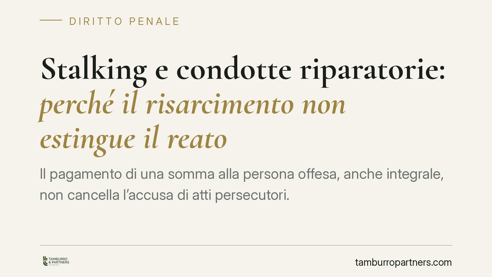

Stalking e condotte riparatorie: perché il risarcimento non estingue il reato
Il pagamento di una somma alla persona offesa, anche integrale, non cancella l'accusa di atti persecutori. La linea che emerge dalla giurisprudenza costituzionale conferma che lo stalking resta fuori dal perimetro delle condotte riparatorie estintive previste dall'art. 162-ter c.p. Il risarcimento conserva però un rilievo che è utile chiarire, sia sul piano penale sia su quello civile.

Il punto
Una questione ricorrente nella difesa per il reato di atti persecutori (art. 612-bis c.p.) riguarda gli effetti del risarcimento del danno. La domanda è semplice: se l'imputato risarcisce la persona offesa, il reato si estingue? La risposta, allo stato, è negativa. Il risarcimento non produce l'estinzione della fattispecie di stalking.
Avvertenza di metodo. Circolano riferimenti a una specifica pronuncia della Corte costituzionale in materia. Prima di richiamare un numero e un anno di sentenza raccomandiamo la verifica diretta sulla banca dati ufficiale della Corte: citare estremi non confermati è un rischio che non ci assumiamo. In questo contributo ci limitiamo quindi all'orientamento sostanziale, verificabile sul testo delle norme vigenti.
Inquadramento normativo
L'art. 162-ter c.p., introdotto dalla L. 103/2017, disciplina l'estinzione del reato per condotte riparatorie. Il meccanismo ha un perimetro delimitato: opera per i reati procedibili a querela soggetta a remissione, quando l'imputato ripara integralmente il danno mediante restituzioni o risarcimento, entro i termini di legge. È dunque una causa estintiva pensata per illeciti di minore allarme sociale, dove la volontà conciliativa tra le parti può prevalere.
Lo stalking si colloca fuori da questo schema per una ragione strutturale. L'art. 612-bis c.p. prevede, di regola, la procedibilità a querela; ma la remissione della querela è condizionata: è ammessa solo in forma processuale, e diventa irrevocabile quando il fatto è stato commesso mediante minacce reiterate nei modi aggravati. Nei casi più gravi — tra cui le ipotesi aggravate previste dallo stesso articolo — il reato è procedibile d'ufficio. Dove non c'è querela remittibile in senso pieno, l'art. 162-ter non trova terreno di applicazione.
A questa architettura interna si aggiunge la cornice sovranazionale. La Convenzione del Consiglio d'Europa sulla prevenzione e la lotta contro la violenza nei confronti delle donne e la violenza domestica (Convenzione di Istanbul, aperta alla firma l'11 maggio 2011 e ratificata dall'Italia con la L. 77/2013) impone una tutela rafforzata alla vittima e diffida da automatismi conciliativi che possano tradursi in una monetizzazione dell'offesa. È il valore che orienta l'interpretazione restrittiva delle cause estintive in questa materia.
Implicazioni pratiche
Per l'imputato il dato è netto: l'offerta risarcitoria, per quanto congrua, non chiude il procedimento penale. Questo non significa che il risarcimento sia irrilevante.
Sul piano penale, la riparazione del danno prima del giudizio può integrare la circostanza attenuante dell'art. 62 n. 6 c.p., con effetti sulla determinazione della pena. Può inoltre incidere sulla valutazione delle esigenze cautelari: una condotta riparatoria genuina è un elemento che il giudice considera nell'esaminare l'attualità del pericolo di reiterazione.
Sul piano civile, il risarcimento estingue o riduce la pretesa risarcitoria della persona offesa, ma non tocca l'azione penale. È un punto che va spiegato con chiarezza a chi assiste la vittima: accettare l'offerta economica non equivale a rinunciare alla tutela penale. La persona offesa può ricevere il risarcimento e mantenere ferma la propria posizione nel procedimento, salvo che scelga, nei limiti di legge, di rimettere una querela quando questa sia remittibile.
La distinzione è quindi tra due piani che non si sovrappongono: l'estinzione del reato, preclusa; e il valore residuo del risarcimento, che permane come attenuante, come elemento cautelare e come definizione del profilo civilistico.
Cosa fare in concreto
- Verificate il regime di procedibilità del caso specifico: la presenza di aggravanti può rendere la querela irrevocabile o il reato procedibile d'ufficio, con effetti decisivi sulla strategia.
- Non presentate l'offerta risarcitoria come via d'uscita dal processo: impostatela, se opportuna, come elemento a sostegno dell'attenuante ex art. 62 n. 6 c.p. e della valutazione cautelare.
- Documentate tempi e integralità della riparazione: la tempestività rispetto alle fasi processuali incide sul riconoscimento dell'attenuante.
- Per la persona offesa, valutate separatamente l'accettazione del ristoro economico e le scelte processuali: sono decisioni distinte e non automaticamente collegate.
- Consigliamo un esame preventivo del fascicolo con il difensore, prima di qualsiasi contatto o proposta tra le parti.
Ogni fattispecie di atti persecutori ha caratteri propri, che incidono sul regime di procedibilità e sugli effetti del risarcimento. Le indicazioni sopra hanno valore orientativo e non anticipano l'esito di un caso concreto, che va analizzato nella sua specificità.
---
Contributo informativo a cura di Tamburro & Partners Avvocati. Non costituisce parere legale.
Ogni condominio ha una storia a sé.
Se gestisci un'amministrazione e vuoi un confronto su una specifica questione condominiale, scrivi allo studio. Ti rispondiamo entro un giorno lavorativo.